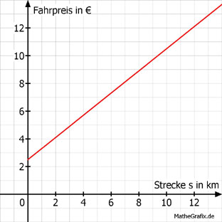

Lineare Funktionen Aufgabe 96 Ein Taxifahrer verlangt für eine Fahrt von 7 km 8,10 €. Für eine Fahrt von 9 km verlangt er 9,70 €. a) Wie lautet die Funktionsgleichung für die Abhängigkeit der Kosten K von der Strecke s? b) Wie hoch ist die Grundgebühr? c) Wie weit ist ein Kunde gefahren, wenn er 12,40 € bezahlen muss? a) 9,70 - 8,10 1,60 m = -------------- = ------- = 0,8 €/km 9 - 7 2 8,10 = 0,8 * 7 + b |-5,6 b = 2,50 € K = 0,8 * s + 2,50  b) b entspricht der Grundgebühr = 2,50 € c) 12,40 = 0,80 * s + 2,50 | -2,50 9,90 = 0,8 * s | :0,8 s = 12,375 km